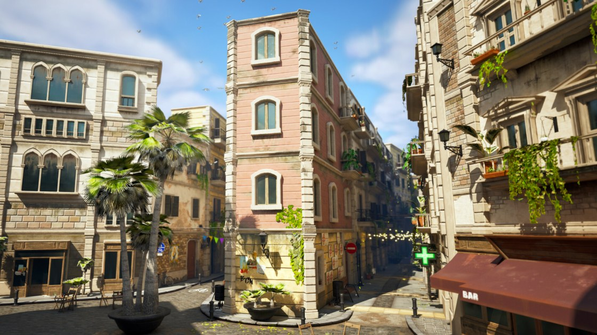

風格化巴塞隆納街景：用模組建築、平鋪材質與表面變化建立 UE5 場景
作者先把牆、窗、拱門與門拆成可重用建築模組，再製作平鋪材質與飾條貼圖；進入 Unreal Engine 5 後，以頂點繪製、色彩遮罩、貼花及覆蓋遮罩增加表面變化。

場景製作 ★★★☆☆
完整分析
場景製作工作流
建築不以每棟獨立資產處理，而拆成牆、窗、拱門與門等可重用模組；完成後可重新組合立面並調整構圖，不必每次重建整棟建築。
材質製作影響
平鋪材質與 trim sheet 先建立可重用基底，再由頂點繪製、RGB mask、decal 和 overlay mask 打破大面積重複；高度遮罩還能控制材質混合邊界的柔硬程度。
導入限制與驗證
作者花六個月並行完成專案，重點是個人作品的結構化流程；來源沒有提供模組數量、材質指令成本或目標硬體效能，因此大型場景導入仍要實測 draw call、材質複雜度與記憶體。
BRIEF｜來源已驗證；證據深度較有限，完整分析會明確區分已知資訊與待驗證事項。